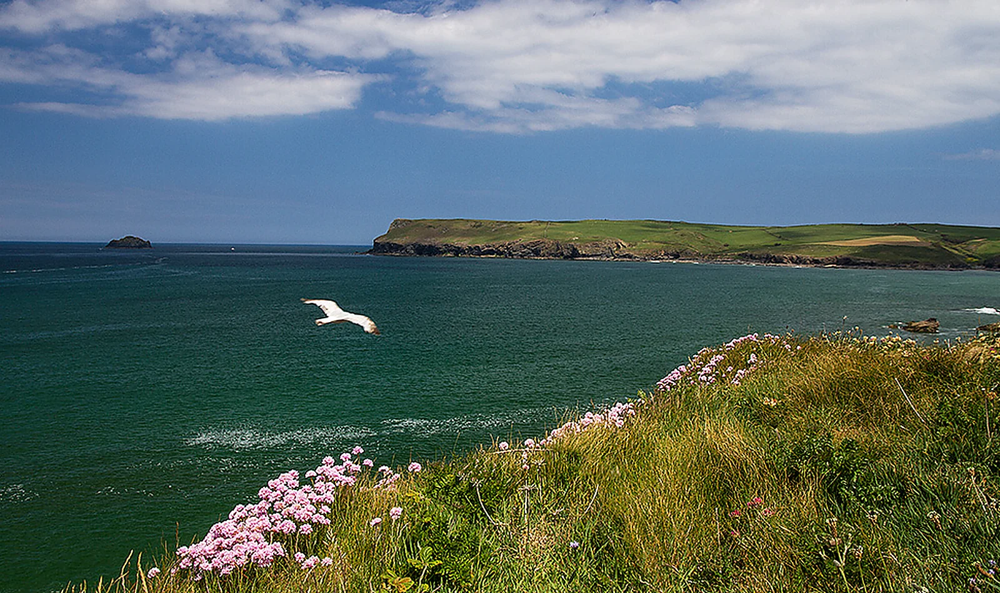
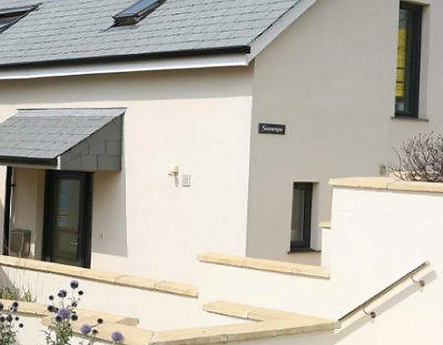
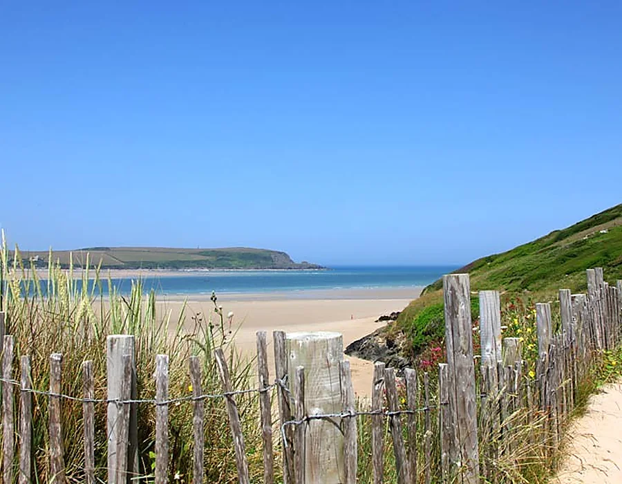

On the water
Surfing and swimming
Polzeath is known for accessible surf, a broad sandy beach and rock pools to explore at low tide.
Plan your days
A bright, privately managed holiday home sleeping up to seven, just a few minutes’ walk from Polzeath Beach, village shops and restaurants.
Direct booking enquiries with the owners, Paul and Julie Duffield
Seascape was built in 2007/08 and has welcomed holiday guests since 2013. Many visitors return year after year for the views, practical family layout and easy access to the village.
Bi-fold doors connect the open-plan living area to a decked terrace overlooking the sea. Inside, the house is warm, light and fully equipped for comfortable self-catering holidays.

Comfortable spaces, practical facilities and a location that makes it easy to leave the car parked.
Look across Polzeath Beach towards Pentire Headland and enjoy sunsets from spring through autumn.
The beach, shops, cafés and village amenities are only a few minutes away on foot.
Private parking for up to three cars gives families and groups room to arrive without compromise.
Surf, swim, walk the coast path or simply watch the weather move across the bay.
On the water
Polzeath is known for accessible surf, a broad sandy beach and rock pools to explore at low tide.
Plan your days
On foot
Follow the north coast path towards Port Isaac or walk beside the Camel Estuary towards Rock.
Discover the area
Slow moments
From clear mornings to long summer sunsets, the coast is part of every day at Seascape.
View the gallery“Beautiful house with everything one could need, always clean and very well maintained.”John Iddon · June 2026
“An excellent property within a two-minute walk to the beach and shops.”Ken Hillier · June 2026
“A great family house with everything you need for a really comfortable stay.”Shirley · June 2026
Review excerpts reproduced from Seascape’s current verified property listing.
Weekly stays are available from £756 to £2,947. Contact the owners directly to confirm current pricing, availability and property details.
Speak directly with the owners about dates, prices and anything you need to know before booking.